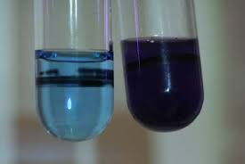
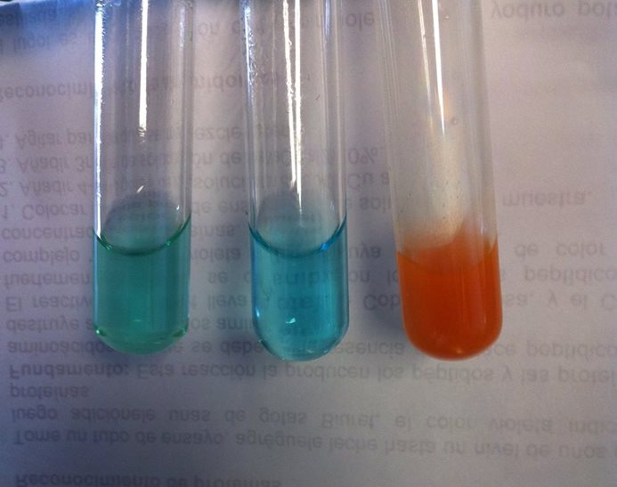
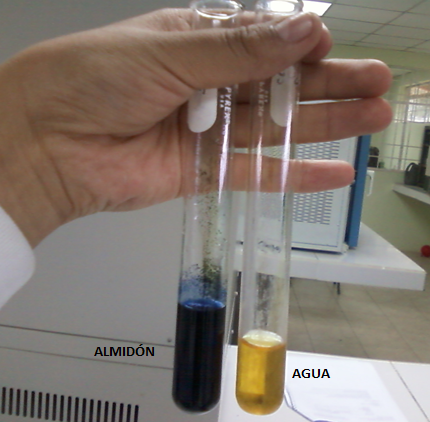

Experimentos sobre las moleculas organicas
1. Proteinas:
El proposito de este experimento es reconocer la presencia de proteinas que contienen algunos alimentos.
Para eso se va a usar el reactivo al biuret que es de color azul, pero en presencia de proteinas su color se vuelve entre rosado y violeta. Entonces nos ayuda a determinar en donde hay proteinas.
Los materiales necesarios son:
- 6 tubos de ensayo
- Gradilla
- Cuentagotas (uno para cada solucion)
- Agua destilada
- Leche
- 6% de sacarosa
- Claras de huevo
- Agua de frijol
- Saliva
- Reactivo al biuret
El procedimiento consta en tomar 6 tubos e insertar 2-3 ml de cada sustancia con el gotero. Agregar aproximadamente 2 ml de reactivo de biuret a cada tubo y mezclar. Viertir 2-3 ml de agua destilada y aproximadamente 2 ml de reactivo de biuret en un tubo de ensayo, que permite verificar el color del biuret en ausencia de proteínas. Observar cualquier cambio en el color del reactivo de biuret en cada tubo.
2. Azucares simples:
El proposito del experimento es reconocer la resencia de azucares simples en algunos alimentos.
Para eso se va a usar el reactivo de Benedict que es de color azul claro; y en presencia de azúcares simples (excepto la sacarosa) reacciona y forma un color entre rojo y marrón si la concentración de los azúcares simples son altos, de color amarillo ocre si la concentración es baja.
Los materiales necesarios son:
- 8 tubos de ensayo
- Gradilla
- Cuentagotas (uno para cada solucion)
- Espatula
- Agua destilada
- 6% de glucosa
- 6% de sacarosa
- Rodajas de manzana o pera
- Miel
- Harina
- Cebolla
- Leche
- Reactivo de Benedict
- Baño Maria
El procedimiento consta en: poner 2-3 ml de cada sustancia en cada tubo y agregar aproximadamente 2 mL de agua destilada al gotero. Agregar 2 ml de reactivo Benedict a cada tubo y mezclar. Viertir 2-3 ml de agua destilada y aproximadamente 2 ml de reactivo Benedict en un tubo de ensayo, que al igual que el anterior experimento permite verificar el color del reactivo de Benedict en ausencia de azúcares reductores. Calentar los tubos hasta que hiervan en un baño Maria durante unos minutos. Observar el posible cambio de color del reactivo de Benedict en cada tubo.
3. Almidon:
El proposito de este experimento es reconocer la resencia del almidon que contienen algunos alimentos
Para eso se va a usar el reactivo de Lugol, que es un líquido amarillo; sin embargo en presencia de almidón se vuelve de color entre azul y negro, mientras no cambia de color en presencia de mono o disacáridos. El cambio de color es inmediato.
Los materiales necesarios son:
- 5 tubos de ensayo
- Gradilla
- Cuentagotas (uno para cada solucion)
- Agua destilada
- 6% de glucosa
- 6% de sacarosa
- Harina de trigo
- Rodaja de papa
- Reactivo de Lugol
El procedimiento consta en tomar 5 tubos e insertar 2-3 ml de cada sustancia con el gotero. Agregar aproximadamente 2 ml de agua destilada a los tubos que contienen la harina el pedazo de papa. Agregar 2 o 3 gotas de reactivo de Lugol a cada tubo y mezclar. En un tubo de ensayo vierta 2-3 ml de agua destilada y 2 o 3 gotas de reactivo de Lugol. El tubo de ensayo que contiene solo el agua permite verificar el color del Lugol en ausencia de almidón Observar cualquier cambio en el color de Lugol en cada tubo.
